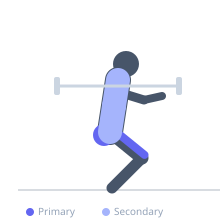
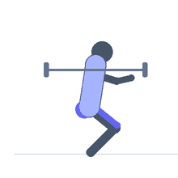

Exercise guide / Safety Bar Squat
Safety Bar Squat
The safety squat bar (SSB) has padded yokes and forward-angled handles that allow the lifter to hold the bar handles rather than grabbing the barbell behind the neck. This design significantly reduces demands on shoulder and wrist mobility and is an excellent alternative for lifters with upper body limitations. The forward cambered weight naturally creates a more upright torso angle, increasing quad and upper back demands.
Primary muscles
rectus femoris
vastus lateralis
vastus medialis
gluteus maximus
Secondary muscles
erector spinae
trapezius middle
trapezius lower
Stabilizers
transverse abdominis
Equipment
Safety Squat Bar
Power Rack (Squat Cage)


Starting position
- Position the safety squat bar on the rack at the appropriate height. Step under it and settle the padded yokes onto your traps. Grip the handles in front of you. Stand up to unrack.
Setup
- Set the rack height so the bar is at mid-chest level. Adjust safety bars. The SSB tends to pitch the torso forward — actively fight this by pulling the handles down and back.
Steps
- Step 1: Unrack and step back. Set feet shoulder-width apart with toes out. Brace the core hard.
- Step 2: Initiate the squat by pushing the knees outward and sitting the hips back and down simultaneously.
- Step 3: Descend to at least parallel. The bar's camber will try to pull you forward — actively fight it by keeping the chest tall and pulling down on the handles.
- Step 4: Drive through the full foot explosively to return to standing.
- Step 5: Exhale at the top and reset for the next rep.
Coaching cues
- Pull the handles down — fight the forward pitch
- Chest up, elbows down
- Sit between your knees
Breathing
- Inhale and brace before descent. Hold through the ascent. Exhale at the top.
Range of motion
- Aim for parallel or below. The SSB makes the squat harder to maintain position in, so use reduced load compared to back squat.
Tempo
- 3-0-1-0
Common mistakes
- Letting the torso pitch excessively forward due to the bar's camber
- Gripping the handles loosely — an active grip helps maintain tension
- Not squatting to depth due to unfamiliarity with the bar
Safety
- The SSB is heavier than a standard barbell — account for bar weight (typically 60–70 lbs)
- Learn to bail safely: the bar can be pushed forward and dropped
Training
- strength: 2–5 reps
- hypertrophy: 6–12 reps
- endurance: 12–20 reps
- strength: 3–6 sets
- hypertrophy: 3–5 sets
- endurance: 2–4 sets
- Rest: {'strength': 240, 'hypertrophy': 90, 'endurance': 60}